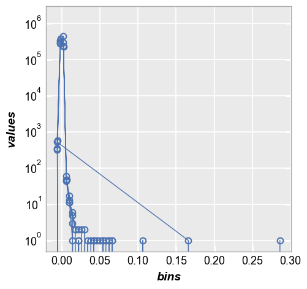
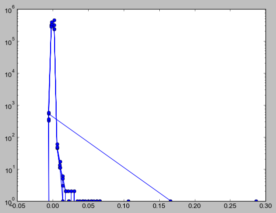
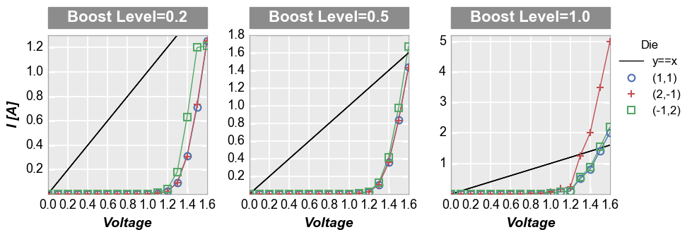
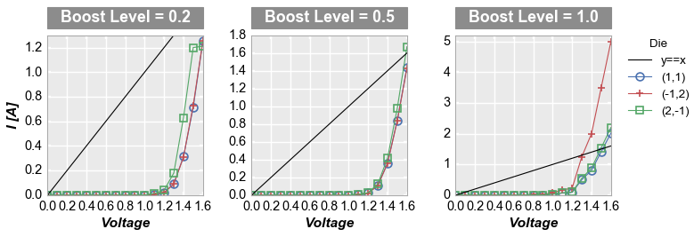

[163]:
%load_ext autoreload
%autoreload 2
%matplotlib inline
import pandas as pd
import pdb
import numpy as np
db = pdb.set_trace
import sys
sys.path = [r'C:\Github\fileio'] + sys.path
import fileio
import fivecentplots as fcp
The autoreload extension is already loaded. To reload it, use:
%reload_ext autoreload
keyword docs¶
[166]:
file = r'C:\GitHub\fivecentplots\fivecentplots\keywords.xlsx'
[226]:
df = pd.read_excel(file, sheet_name='Data')
[227]:
df
[227]:
| Keyword | Data Type | Description | Default | Example | |
|---|---|---|---|---|---|
| 0 | auto_scale | True | enable/disable auto-scaling feature for one-si... | True | `auto-scale <ranges.html#Primary-axes-only>`_ |
| 1 | NaN | NaN | specification; not allowed for heatmap or hist... | NaN | NaN |
| 2 | col | str | name of DataFrame column to use for column-bas... | None | `column plot <plot.html#Column-plot>`_ |
| 3 | fig_groups | str|list of str | DataFrame column(s) to use for figure-level gr... | None | `figure plots <grouping.html#figure-plots>`_ |
| 4 | filter | str | string-based DataFrame filter (similar to quer... | None | see most plot examples |
| 5 | ncol | int | specify the number of columns in a wrap plot | try to make square grid | `compare two cases <grouping.html?highlight=nc... |
| 6 | row | str | name of DataFrame column to use for row-based ... | None | `row plot <plot.html#Row-plot>`_ |
| 7 | share_x | boolean | enable primary x-axis range sharing across all... | True | `axis sharing <ranges.html#Axes-sharing>`_ |
| 8 | share_y | boolean | enable primary y-axis range sharing across all... | True | NaN |
| 9 | share_z | boolean | enable primary z-axis range sharing across all... | True | NaN |
| 10 | share_x2 | boolean | enable secondary x-axis range sharing across a... | True | NaN |
| 11 | share_y2 | boolean | enable secondary y-axis range sharing across a... | True | NaN |
| 12 | share_col | boolean | enable axis range sharing for all subplots in ... | False | NaN |
| 13 | share_row | boolean | enable axis range sharing for all subplots in ... | False | NaN |
| 14 | trans_x | str|None | apply an axis transformation to a given axis | None | None |
| 15 | NaN | NaN | options: 'abs', 'negative' or 'neg', 'nq' (nor... | NaN | NaN |
| 16 | NaN | NaN | inverse' or 'inv', ('pow', int), 'flip' | NaN | NaN |
| 17 | trans_x2 | str|None | same as ``trans_x`` | None | None |
| 18 | trans_y | str|None | same as ``trans_x`` | None | None |
| 19 | trans_y2 | str|None | same as ``trans_x`` | None | None |
| 20 | trans_z | str|None | same as ``trans_x`` | None | None |
| 21 | wrap | str|list | name or list of names of DataFrame columns for... | NaN | `wrap plot <plot.html#Wrap-plot>`_ |
[228]:
width = pd.DataFrame(columns=df.columns, index=[0])
for col in df.columns:
width[col] = max(df[col].apply(lambda x: len(str(x))).max(), len(col)) + 2
width
[228]:
| Keyword | Data Type | Description | Default | Example | |
|---|---|---|---|---|---|
| 0 | 12 | 17 | 68 | 25 | 70 |
[229]:
line = ''
for col in width.columns:
line += '+' + '-'*width[col].iloc[0]
line += '+\n'
[230]:
tab = ''
for irow, row in df.iterrows():
for col, value in row.items():
tab += (('| %s ' % value).ljust(width[col].iloc[0]+1)).replace('nan', ' ')
tab += '|\n'
# check for vertical merged
line0 = ('%s' % line).split('+')
if irow < len(df) - 1:
nrow = df.iloc[irow+1]
for icol, (col, value) in enumerate(nrow.items()):
if type(value) is float and np.isnan(value):
line0[icol+1] = line0[icol+1].replace('-', ' ')
line0 = '+'.join(line0)
tab += line0
#print(tab)
[231]:
header = line
for col in df.columns:
header += ('| %s ' % col).ljust(width[col].iloc[0]+1)
header += '|\n'
header += line.replace('-', '=')
#print(header)
[232]:
print(header + tab)
+------------+-----------------+--------------------------------------------------------------------+-------------------------+----------------------------------------------------------------------+
| Keyword | Data Type | Description | Default | Example |
+============+=================+====================================================================+=========================+======================================================================+
| auto_scale | True | enable/disable auto-scaling feature for one-side range | True | `auto-scale <ranges.html#Primary-axes-only>`_ |
+ + +--------------------------------------------------------------------+ + +
| | | specification; not allowed for heatmap or histogram | | |
+------------+-----------------+--------------------------------------------------------------------+-------------------------+----------------------------------------------------------------------+
| col | str | name of DataFrame column to use for column-based subplots | None | `column plot <plot.html#Column-plot>`_ |
+------------+-----------------+--------------------------------------------------------------------+-------------------------+----------------------------------------------------------------------+
| fig_groups | str|list of str | DataFrame column(s) to use for figure-level grouping | None | `figure plots <grouping.html#figure-plots>`_ |
+------------+-----------------+--------------------------------------------------------------------+-------------------------+----------------------------------------------------------------------+
| filter | str | string-based DataFrame filter (similar to query in pandas) | None | see most plot examples |
+------------+-----------------+--------------------------------------------------------------------+-------------------------+----------------------------------------------------------------------+
| ncol | int | specify the number of columns in a wrap plot | try to make square grid | `compare two cases <grouping.html?highlight=ncol#By-unique-values>`_ |
+------------+-----------------+--------------------------------------------------------------------+-------------------------+----------------------------------------------------------------------+
| row | str | name of DataFrame column to use for row-based subplots | None | `row plot <plot.html#Row-plot>`_ |
+------------+-----------------+--------------------------------------------------------------------+-------------------------+----------------------------------------------------------------------+
| share_x | boolean | enable primary x-axis range sharing across all subplots | True | `axis sharing <ranges.html#Axes-sharing>`_ |
+------------+-----------------+--------------------------------------------------------------------+-------------------------+ +
| share_y | boolean | enable primary y-axis range sharing across all subplots | True | |
+------------+-----------------+--------------------------------------------------------------------+-------------------------+ +
| share_z | boolean | enable primary z-axis range sharing across all subplots | True | |
+------------+-----------------+--------------------------------------------------------------------+-------------------------+ +
| share_x2 | boolean | enable secondary x-axis range sharing across all subplots | True | |
+------------+-----------------+--------------------------------------------------------------------+-------------------------+ +
| share_y2 | boolean | enable secondary y-axis range sharing across all subplots | True | |
+------------+-----------------+--------------------------------------------------------------------+-------------------------+ +
| share_col | boolean | enable axis range sharing for all subplots in a column of subplots | False | |
+------------+-----------------+--------------------------------------------------------------------+-------------------------+ +
| share_row | boolean | enable axis range sharing for all subplots in a row of subplots | False | |
+------------+-----------------+--------------------------------------------------------------------+-------------------------+----------------------------------------------------------------------+
| trans_x | str|None | apply an axis transformation to a given axis | None | None |
+ + +--------------------------------------------------------------------+ + +
| | | options: 'abs', 'negative' or 'neg', 'nq' (normal quantile) | | |
+ + +--------------------------------------------------------------------+ + +
| | | inverse' or 'inv', ('pow', int), 'flip' | | |
+------------+-----------------+--------------------------------------------------------------------+-------------------------+----------------------------------------------------------------------+
| trans_x2 | str|None | same as ``trans_x`` | None | None |
+------------+-----------------+--------------------------------------------------------------------+-------------------------+----------------------------------------------------------------------+
| trans_y | str|None | same as ``trans_x`` | None | None |
+------------+-----------------+--------------------------------------------------------------------+-------------------------+----------------------------------------------------------------------+
| trans_y2 | str|None | same as ``trans_x`` | None | None |
+------------+-----------------+--------------------------------------------------------------------+-------------------------+----------------------------------------------------------------------+
| trans_z | str|None | same as ``trans_x`` | None | None |
+------------+-----------------+--------------------------------------------------------------------+ +----------------------------------------------------------------------+
| wrap | str|list | name or list of names of DataFrame columns for wrap-type subplots | | `wrap plot <plot.html#Wrap-plot>`_ |
+------------+-----------------+--------------------------------------------------------------------+-------------------------+----------------------------------------------------------------------+
[11]:
print(fileio.utilities.xls_2_rst(file, 'Contour'))
+--------------+-----------+----------------------------------------+---------+--------------------------------------------------+
| Keyword | Data Type | Description | Default | Example |
+==============+===========+========================================+=========+==================================================+
| :hh:`cmap` | str | Name of a color map | inferno | `contour example <contour.html#Filled-contour>`_ |
+--------------+-----------+----------------------------------------+---------+ +
| :hh:`filled` | boolean | Fill area between contour lines | True | |
+--------------+-----------+----------------------------------------+---------+ +
| :hh:`levels` | int | Number of contour lines/levels to draw | 20 | |
+--------------+-----------+----------------------------------------+---------+--------------------------------------------------+
[ ]:
%time fcp.plot(df=df, x='Voltage', y='I [A]', legend='Die', inline=True, show=True, \
filter='Substrate=="Si" & Target Wavelength==450 & Boost Level==0.2 & Temperature [C]==25',\
wrap='Substrate', ax_size=[300, 300], \
rc_label_fill_color='#fffd75', rc_label_fill_alpha=0.5,\
rc_label_font_color='#000000', wrap_title_fill_color='#00FFFF', \
wrap_title_font_color='#000000', label_fill_color='#FF0000', label_fill_alpha=0.5)
bug fixes¶
[3]:
df = pd.read_excel(r'C:\data\Denver_Test_Case.xlsx')
[4]:
df.head()
[4]:
| bins | values | |
|---|---|---|
| 0 | NaN | 6 |
| 1 | -0.005976 | 325 |
| 2 | NaN | 14334 |
| 3 | -0.001976 | 307513 |
| 4 | NaN | 1453260 |
[30]:
fcp.plot(df, x='bins', y='values', ax_scale='logy')

[27]:
mask = np.isfinite(df['bins'])
plt.semilogy(df[mask]['bins'], df[mask]['values'], 'o-')
plt.show()

[129]:
def mpl_get_ticks(ax, xon=True, yon=True):
"""
Divine a bunch of tick and label parameters for mpl layouts
Args:
ax (mpl.axes)
Returns:
dict of x and y ax tick parameters
"""
tp = {}
xy = []
if xon:
xy += ['x']
if yon:
xy += ['y']
for vv in xy:
tp[vv] = {}
tp[vv]['min'] = min(getattr(ax, 'get_%slim' % vv)())
tp[vv]['max'] = max(getattr(ax, 'get_%slim' % vv)())
tp[vv]['ticks'] = getattr(ax, 'get_%sticks' % vv)()
tp[vv]['labels'] = [f for f in getattr(ax, '%saxis' % vv).iter_ticks()]
tp[vv]['label_vals'] = [f[1] for f in tp[vv]['labels']]
tp[vv]['label_text'] = [f[2] for f in tp[vv]['labels']]
try:
tp[vv]['first'] = [i for i, f in enumerate(tp[vv]['labels'])
if f[1] >= tp[vv]['min'] and f[2] != ''][0]
except:
tp[vv]['first'] = -999
try:
tp[vv]['last'] = [i for i, f in enumerate(tp[vv]['labels'])
if f[1] <= tp[vv]['max'] and f[2] != ''][-1]
except:
tp[vv]['last'] = -999
missing = [f for f in ['x', 'y'] if f not in tp.keys()]
for mm in missing:
tp[mm] = {}
tp[mm]['ticks'] = []
tp[mm]['labels'] = []
tp[mm]['label_text'] = []
tp[mm]['first'] = -999
tp[mm]['last'] = -999
return tp
[104]:
import os
osjoin = os.path.join
df = pd.read_csv(osjoin(os.path.dirname(fcp.__file__), 'tests', 'fake_data.csv'))
[162]:
fcp.plot(df, x='Voltage', y='I [A]', legend='Die', col='Boost Level', ax_size=[225, 225], share_y=False,
filter='Substrate=="Si" & Target Wavelength==450 & Temperature [C]==25', xmin=0, xmax=1.6, ymin=[0, 0, 0], ymax=[1.3, 1.8, 5.2],
engine='bokeh', ref_line=df['Voltage'], ref_line_legend_text='y==x', )
[162]:
[144]:
df = pd.read_csv(osjoin(os.path.dirname(fcp.__file__), 'tests', 'fake_data.csv'))
fcp.plot(df, x='Voltage', y='I [A]', legend='Die', col='Boost Level', ax_size=[225, 225], share_y=False,
filter='Substrate=="Si" & Target Wavelength==450 & Temperature [C]==25', ref_line=df['Voltage'],
ref_line_legend_text='y==x', xmin=0, xmax=1.6, ymin=[0, 0, 0], ymax=[1.3, 1.8, 5.2])

[112]:
import matplotlib.pylab as plt
import matplotlib.patches
[146]:
import natsort
natsort.natsorted(df_boost.Die.unique())
[146]:
['(1,1)', '(2,-1)', '(-1,2)']
[150]:
df = pd.read_csv(osjoin(os.path.dirname(fcp.__file__), 'tests', 'fake_data.csv'))
# Filter the dataframe
df_sub = df[(df.Substrate=="Si")&(df['Target Wavelength']==450)&(df['Temperature [C]']==25)]
# Set some defaults
markers = ['o', '+', 's']
colors = ['#4b72b0', '#c34e52', '#54a767']
ymax = [1.3, 1.8, 5.2]
lines = []
# Create the figure and axes
f, axes = plt.subplots(1, 3, sharex=False, sharey=False, figsize=[9.82, 3.46])
# Plot the data and style the axes
for iboost, boost in enumerate(df_sub['Boost Level'].unique()):
df_boost = df_sub[df_sub['Boost Level']==boost]
for idie, die in enumerate(natsort.natsorted(df_boost.Die.unique())):
df_die = df_boost[df_boost.Die==die]
axes[iboost].set_facecolor('#eaeaea')
axes[iboost].grid(which='major', axis='both', linestyle='-', color='#ffffff', linewidth=1.3)
lines += axes[iboost].plot(df_die['Voltage'], df_die['I [A]'], '-', color=colors[idie],
marker=markers[idie], markeredgecolor=colors[idie], markerfacecolor='none', markeredgewidth=1.5, markersize=8)
axes[iboost].set_axisbelow(True)
axes[iboost].spines['bottom'].set_color('#aaaaaa')
axes[iboost].spines['top'].set_color('#aaaaaa')
axes[iboost].spines['right'].set_color('#aaaaaa')
axes[iboost].spines['left'].set_color('#aaaaaa')
if iboost==0:
axes[iboost].set_ylabel('I [A]', fontsize=14, fontweight='bold', fontstyle='italic')
axes[iboost].set_xlabel('Voltage', fontsize=14, fontweight='bold', fontstyle='italic')
axes[iboost].set_xlim(left=0, right=1.6)
axes[iboost].set_ylim(bottom=0, top=ymax[iboost])
# Add the column labels
rect = matplotlib.patches.Rectangle((0, 1.044), 1, 30/225, fill=True, transform=axes[iboost].transAxes,
facecolor='#8c8c8c', edgecolor='#8c8c8c', clip_on=False)
axes[iboost].add_patch(rect)
text = 'Boost Level = {}'.format(boost)
axes[iboost].text(0.5, 1.111, text, transform=axes[iboost].transAxes,
horizontalalignment='center', verticalalignment='center',
rotation=0, color='#ffffff', weight='bold', size=16)
# Customize ticks
axes[iboost].tick_params(axis='both', which='major', pad=5, colors='#ffffff',
labelsize=13, labelcolor='#000000', width=2.2)
# Add reference line
ref_line = df_die['Voltage']
ref = axes[iboost].plot(df_die['Voltage'], ref_line, '-', color='#000000', linewidth=1)
if iboost == 0 :
lines = ref + lines
# Style the figure
f.set_facecolor('#ffffff')
f.subplots_adjust(left=0.077, right=0.882, top=0.827, bottom=0.176, hspace=0.133, wspace=0.313)
# Add legend
leg = f.legend(lines[0:4], ['y==x'] + list(df_boost.Die.unique()), title='Die', numpoints=1,
bbox_to_anchor=(1, 0.85), prop={'size': 12})
leg.get_frame().set_edgecolor('#ffffff')
# Show the plot
plt.show()

[90]:
lines
[90]:
[<matplotlib.lines.Line2D at 0x1ebeec7fc50>,
<matplotlib.lines.Line2D at 0x1ebedd4cc50>,
<matplotlib.lines.Line2D at 0x1ebedd4cd30>,
<matplotlib.lines.Line2D at 0x1ebee943668>,
<matplotlib.lines.Line2D at 0x1ebee943c18>,
<matplotlib.lines.Line2D at 0x1ebedd4cbe0>,
<matplotlib.lines.Line2D at 0x1ebee3509e8>,
<matplotlib.lines.Line2D at 0x1ebee3503c8>,
<matplotlib.lines.Line2D at 0x1ebee350550>,
<matplotlib.lines.Line2D at 0x1ebefffacf8>]
[ ]: